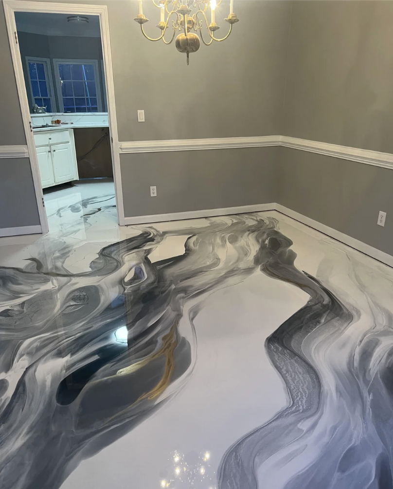
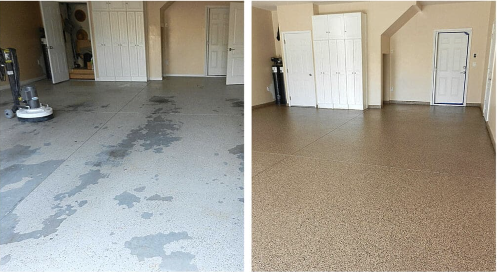
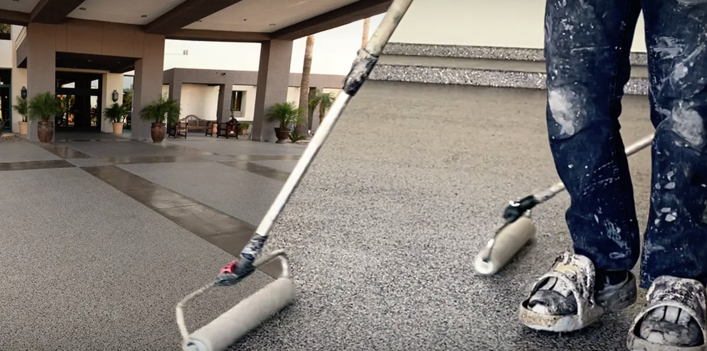

Metallic epoxy flooring in Fayetteville is what people ask for after they have stood on one. Reflective pigment is suspended in clear resin, then moved while the floor is still wet, and the finished surface reads like cut stone or poured metal. We install it in finished garages off Mount Sequoyah, in salons and studios near Dickson Street, and in showrooms where the floor is doing part of the selling.

A metallic pour finished with two clear coats — no two floors come out the same.
What Does Metallic Epoxy Flooring Involve?
Prep is the same as any coating we install and it is most of the job. We diamond grind the slab to open the concrete, fill cracks and pits with a rigid epoxy filler, vacuum the dust out, then roll a pigmented primer. That primer color is the background the metallic floats over, and it matters more here than on any other system. The same topcoat over a charcoal base and over a pearl base produces two floors you would not guess were related.
Then the part that takes a trained hand. We pour a 100% solids epoxy loaded with metallic pigment and work it with squeegees, rollers, and a light solvent mist to open cells and pull veins. Pot life is roughly 15 to 30 minutes from the moment the resin is mixed. Whatever is going to happen in that section has to happen inside that window, which is why metallic prices out as skilled labor rather than materials.
Two clear coats finish it. On garage floors we make the last coat polyaspartic, because Arkansas sun through an open door will amber a clear epoxy over a few seasons.
When Does Metallic Epoxy Make Sense?
Pick metallic when the floor is being looked at, not just walked on. Home gyms, finished garages that double as hangout space, barbershops, boutiques, tasting rooms, and dealership floors all earn back the difference.
It also fixes a specific problem that nothing else fixes cheaply: a slab patched so many times it will never look uniform again. Solid color paint frames every repair. A metallic pour swallows them.
Do not put it in a working shop where you drop tools and drag steel across the floor. A flake system takes that abuse, costs less, and can be patched. Metallic is a finish, not armor.
Why Do Metallic Floors Fail Early in Northwest Arkansas?
Moisture, nearly every time, in a slab nobody tested. Much of Fayetteville is built on Ozark limestone and hillside lots where water moves sideways through the ground and finds the underside of a slab. Older pours in Washington County often have a vapor barrier that was thin, torn, or never installed. Water vapor pushes up, gets trapped under a coating that cannot breathe, and lifts it in sheets.
We run a calcium chloride or in-slab relative humidity test before quoting a metallic system. If the reading is high, a vapor-barrier primer goes down first — roughly $1.00 to $1.75 per square foot. That line is the difference between a floor that lasts fifteen years and one that blisters by the second spring.
The second failure is a thin clear coat. Metallic pigment sits close to the surface. Wear through the clear and the pattern goes with it, and there is no invisible patch for that. Two full clear coats, no exceptions.
What Affects the Cost of Metallic Epoxy Flooring in Fayetteville?
Budget $7 to $12 per square foot installed. A two-car garage generally comes in at $3,200 to $5,400. National pricing for the same system sits at $8 to $15 per square foot; Northwest Arkansas runs under that because overhead here is lower, not because the steps get shorter.
- Slab condition: old adhesive, spalling, or a failed coating that must be ground off adds $1.50–$3.50 per square foot. Prep is 25–40% of the labor on a metallic job.
- Moisture mitigation: $1.00–$1.75 per square foot when the test calls for it
- Color count: one pigment over a base is the low end; three-color blends with pulled veining take longer
- Room shape: long open runs pour fast. Small rooms, columns, and tight corners cost more per square foot, because the pot-life clock does not care how big the room is.
Every estimate is written and itemized, with the moisture reading on it. If the slab tests dry, that line comes off the price.
Metallic vs. Flake: Which One Should You Buy?
Flake is the right answer for most Fayetteville garages. The chip broadcast hides road grit and salt residue between cleanings, gives you grip without additives, and can be spot-repaired. It runs $4 to $7 per square foot here.
Metallic costs roughly double and what you buy is appearance. Smoother surface, shows dust sooner, needs grit added for traction, cannot be patched invisibly.
Straight answer: if the space is a workshop, buy flake and put the difference into lighting and shelving. If people are going to stand in the room and say something about the floor, buy metallic. A good share of our metallic calls turn into flake once we walk the space together, and those customers are happier a year later.
More of Our Epoxy Flooring Work

Pigment worked while the resin is still open.

Ground and primed before any color goes down.

Flake for shops, metallic for showrooms.
Frequently Asked Questions — Metallic Epoxy Flooring in Fayetteville, AR
How much does metallic epoxy flooring cost in Fayetteville, AR?
Metallic epoxy flooring in Fayetteville runs $7 to $12 per square foot installed. A standard two-car garage lands between $3,200 and $5,400. Slab condition and the number of pigment colors move that number more than square footage does.
Can you match a metallic floor you did for someone else?
We can match the color family and the general character, but not the exact pattern. The pigment moves while the resin is wet, so the veining is decided by how that specific pour gets worked. Every metallic floor we install in Northwest Arkansas is one of one.
Is metallic epoxy too slippery for a garage?
A high-gloss metallic floor is slick when wet, so we blend a fine polymer grit into the clear topcoat on any garage where vehicles track in snow or rain. It adds a slight texture underfoot and costs almost nothing. Skipping it on a Fayetteville garage floor is a mistake in January.
Can metallic epoxy go over my existing coated floor?
No. The old coating has to be ground off down to bare concrete first. Metallic is a thin self-leveling system, so anything loose underneath shows through the finish or pulls the new floor off with it. Removal usually adds $1.50 to $3.50 per square foot.
Weighing your options? Compare it with a standard garage floor epoxy in Fayetteville, or read about epoxy floor repair if your current coating is already letting go.